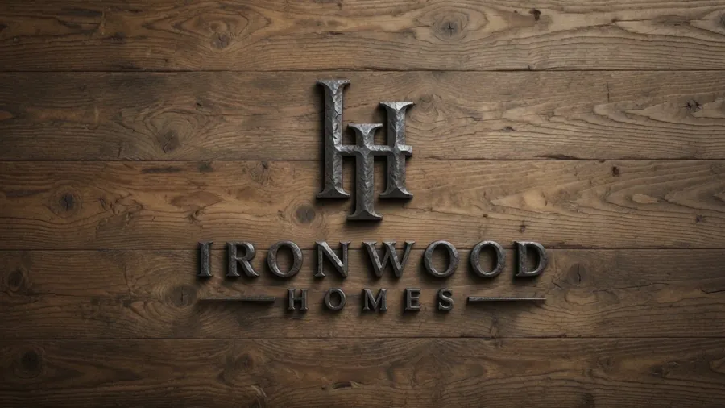
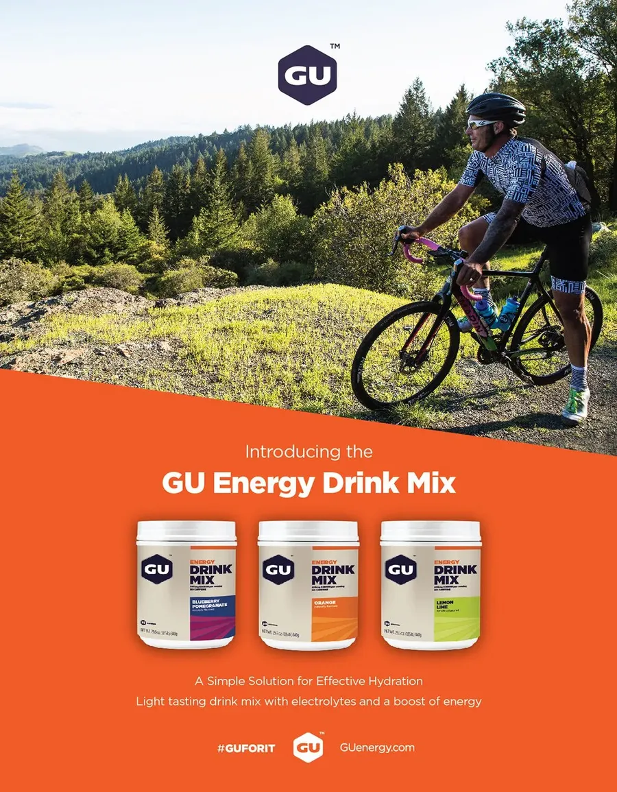
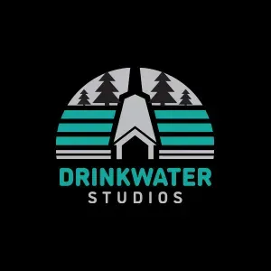
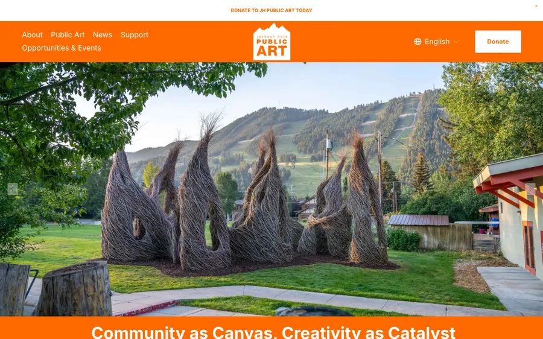
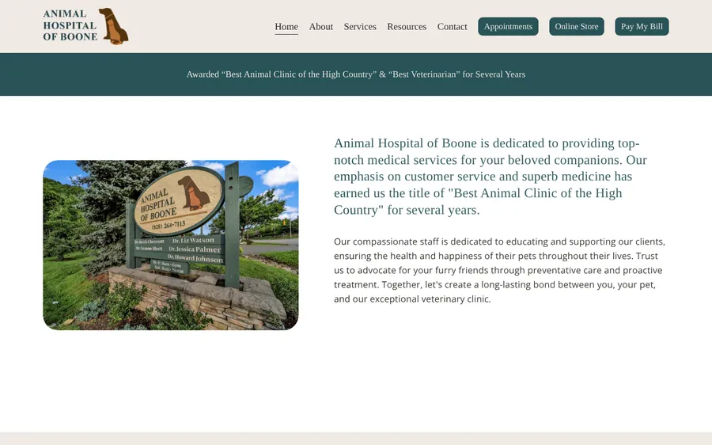
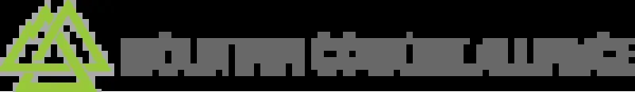
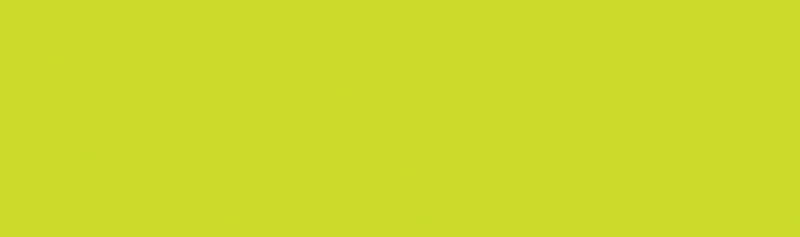
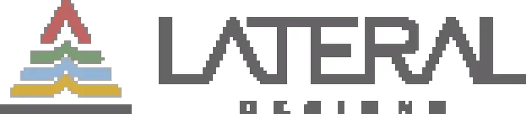
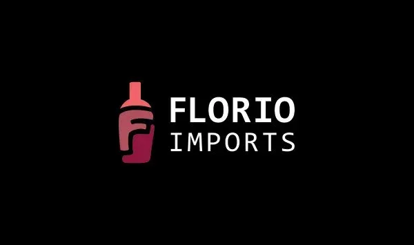

Work
Brand work. Websites. Campaigns. Decks.
A selection of projects across brand identity, websites, content and campaigns. Each one built on strategy, strong design and clean execution.
All projects
Jeremy Jones' Deeper
Teton Gravity Research · CampaignsPackaging, Poster
Ironwood Homes
Ironwood Homes · BrandingBranding, Logo
Peace Park
Peace Park · WebsitesWebsite
Asymbol
Asymbol · CampaignsAds, Email
Mountain Mind Project
Mountain Mind Project · WebsitesWebsite redesign, Photography
GU Energy
GU Energy · CampaignsPrint ads, Overflow design
Drinkwater Studios
Drinkwater Studios · BrandingBrand identity
Hines Goldsmiths
Snapshot · WebsitesWebsites
Jackson Hole Public Art
Snapshot · WebsitesWebsites
Dwelling
Snapshot · WebsitesWebsites
Animal Hospital of Boone
Snapshot · WebsitesWebsites
Connecticut Signcraft
Snapshot · WebsitesWebsites
Wind River Builders
Snapshot · BrandingBrandingMountain Cowork Alliance
Snapshot · BrandingBranding
VALE
Snapshot · BrandingBranding
Lateral Designs
Snapshot · BrandingBranding
Florio Imports
Snapshot · BrandingBranding

Campaigns
Jeremy Jones' Deeper
Packaging, poster, ads and DVD menu for TGR's snowboard film Deeper.
View project → AI-directed mockup
AI-directed mockupBranding
Ironwood Homes
Brand identity for a custom home builder serving Star Valley, Wyoming.
View project →Websites
Peace Park
Website for an annual gathering of the world's best snowboarders.
View project →Campaigns
Asymbol
Ads, email, social and a binding launch with Union and Bryan Iguchi.
View project →Websites
Mountain Mind Project
A full redesign for a mindfulness training company, with our own photography.
View project →Campaigns
GU Energy
Overflow design partner to GU Energy's in-house team.
View project →Branding
Drinkwater Studios
Brand identity for a Southern California film and television production company.
View project →Websites
Hines Goldsmiths
An online store for a Jackson Hole fine jewelry and glassware shop, so customers can buy direct.
View project →Websites
Jackson Hole Public Art
A complete redesign for a nonprofit, built around public art events, art opportunities and donations.
View project →Websites
Dwelling
A rebuilt site for a Jackson Hole interior design studio with a Mountain Modern look.
View project →Websites
Animal Hospital of Boone
A new site for a Boone, NC animal hospital, organized around appointments and prescription refills.
View project →Websites
Connecticut Signcraft
A site for a family-run Connecticut sign company built to show its work across devices.
View project →Branding
Wind River Builders
A logo for a Jackson Hole construction company, with a western mark that quietly echoes a cattle brand.
View project →Branding
Mountain Cowork Alliance
A launch identity for an alliance of coworking spaces in mountain towns. The mark is about spaces joining forces.
View project →Branding
VALE
Primary and secondary logos for a DJ. The secondary mark goes on apparel and stickers.
View project →Branding
Lateral Designs
An identity for a Wyoming outdoor apparel brand made for long days on the water.
View project →Branding
Florio Imports
An identity for an importer of Italian, Portuguese and Spanish wines.
View project →List view shows a picture as you hover a row. Grid view is the same set as cards. Both follow the tabs.